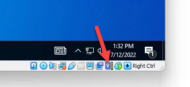

Fix VirtualBox green turtle icon issue on Windows hosts caused by Hyper-V and VBS. Learn how to improve VM performance and stability with step-by-step instructions.
Symptoms
- The VirtualBox host software shows a green turtle indicator (always visible); and/or
- terminal message:
rcpu_preempt self-detected stall on CPU - Very slow boot or general sluggishness inside the VM.
- CPU lockups or stalls.
- VM crashes or failure to launch unless retried multiple times.
Image: VirtualBox Green Turtle Indicator
Where can I find the VirtualBox green turtle indicator? In the VirtualBox status bar.
Image: VirtualBox Status Bar including Green Turtle Indicator

If the VirtualBox green turtle indicator is not shown, and you're still experiencing issues, then it's a different issue.
What the Green Turtle Icon Means
When running on a Windows host, VirtualBox may display a green turtle icon in the bottom right of the VM window. This indicates that the VirtualBox hypervisor is running in a degraded mode due to interference from Windows features such as Hyper-V or Virtualization-Based Security (VBS). This fallback mode significantly reduces performance and can cause above mentioned issues.
For best performance and stability, it is recommended to fix the green turtle indicator by disabling Hyper-V using the batch script above.
Platform Specific
Host operating system (OS) specific:
 Linux: Not affected.
Linux: Not affected. macOS: Not affected.
macOS: Not affected. Windows: This issue is applicable to Windows-based host
operating systems only.
Windows: This issue is applicable to Windows-based host
operating systems only.
Affected VM guest operating systems: all
( Kicksecure,
Kicksecure,
 Whonix,
Whonix,  Debian, etc.)
Debian, etc.)
Root issue caused by:
 VirtualBox,
VirtualBox,
 Microsoft Windows
Microsoft Windows
Root issue not caused by: VM guest operating system
Options
- No action: You could ignore this issue. In that case, it may be best to only launch 1 VM at a time.
- Future: A better solution may come available later. [1]
- Disable Hyper-V via batch script: Use the provided batch script to automatically disable Hyper-V and related features. See instructions below.
- Manual disablement of Hyper-V: Too complicated for most lay users. Too many steps required. Unspecific to Kicksecure. Can be resolved as per Self Support First Policy. Utilize Search Engines, Documentation and AI. Try Testing with a Debian VM and VirtualBox Generic Bug Reproduction. Contact VirtualBox support. No need to ask Kicksecure or Whonix support, because they don't develop VirtualBox.
Disable Hyper-V via batch script
To solve the slowdown and CPU lockup issue, it is necessary to
disable Windows Hyper-V and related virtualization security features. As
this is complex when done manually, a batch script
DisableHyperV.bat is provided to automate this process.
disabling Hyper-V may cause Windows automatic BitLocker decryption to break. If that happens, you'd need to provide a recovery key at least once to get the system to boot, so it's very important that you have access to that key before trying to disable Hyper-V. (The scripts are designed to prevent Windows from misbehaving in this way, but better safe than sorry.)
1. Download the script.
Visit this GitHub link DisableHyperV.bat,
then click the Raw button. Right-click anywhere on the page,
choose Save Page As...,
and save the file as DisableHyperV.bat.
2. Choose a storage location.
Save the file to a simple location such as:
C:\Users\YourUsername\Downloads or
C:\Users\YourUsername\Desktop
3. Prepare for execution as administrator.
Since the current user account is limited (non-admin), you will need admin credentials to run the script.
- Right-click the
DisableHyperV.batfile. - Select
Run as administrator. - When prompted by Windows User Account Control (UAC), enter the administrator username and password.
4. Wait for the script to complete.
A command prompt window will appear and automatically apply the required changes. Once it finishes, it may prompt for a reboot.
5. Reboot the system.
Restart Windows for all changes to take effect.
6. Verify success.
After reboot, start VirtualBox again. The green turtle icon should no longer appear, and CPU stall messages should be gone.
Image: VirtualBox V Symbol

Table: Left side bad (degraded), right side good (functional)
Bad |
Good |
|---|---|
|
|
7. Done.
Troubleshooting
Reboot required.
Green turtle issue still not resolved? The following commands can be helpful to debug this issue.
1. Open Windows Power Shell as administrator.
Start Menu -> type Windows Power Shell -> right
click -> Run as administrator
2. Check if Hyper-V has been loaded.
Get-CimInstance Win32_ComputerSystem | Select-Object HypervisorPresent
Good result:
HypervisorPresent
-----------------
FalseFalse means that Hyper-V has not been started. This is
good, because Hyper-V competes with VirtualBox and slows down
VirtualBox, so if it's not running, that's great.
Bad result:
HypervisorPresent
-----------------
TrueTrue means that Hyper-V has been started. This is bad,
because Hyper-V competes with VirtualBox and slows down VirtualBox.
3. Run systeminfo to find out what may be starting Hyper-V.
systeminfo
Do not post the full output of systeminfo. It is not needed and contains private information such as system model.
Good result:
Virtualization-based security: Status: Not enabled
App Control for Business policy: Enforced
App Control for Business user mode policy: Off
Security Features Enabled:
Hyper-V Requirements: VM Monitor Mode Extensions: Yes
Virtualization Enabled In Firmware: Yes
Second Level Address Translation: Yes
Data Execution Prevention Available: YesBad result:
Virtualization-based security: Status: Running
Required Security Properties:
Available Security Properties:
Base Virtualization Support
Secure Boot
DMA Protection
Secure Memory Overwrite
UEFI Code Readonly
SMM Security Mitigations 1.0
Mode Based Execution Control
Services Configured:
Secure Launch
SMM Firmware Measurement
Services Running:
Secure Launch
SMM Firmware Measurement
App Control for Business policy: Enforced
App Control for Business user mode policy: Off
Security Features Enabled:
SMM Isolation Level: 30
Hyper-V Requirements: A hypervisor has been detected. Features required for Hyper-V will not be displayed.In above case, Secure Launch and
SMM Firmware Measurement were still running, causing
Hyper-V to automatically start at boot time. After disabling
Firmware protection, this issue has been resolved.
Resources
- Check also:
Start Menu-> typeWindows Security->Device Security->Core Isolation->Turn offMemory integrityKernel-mode Hardware-enforced Stack ProtectionFirmware protection
- Check if device guard is running: (Get-CimInstance -ClassName Win32_DeviceGuard -Namespace root\Microsoft\Windows\DeviceGuard).SecurityServicesRunning
- VirtualBox manual: Paravirtualization Providers
- VirtualBox manual: Acceleration Tab
- https://superuser.com/questions/945910/how-to-select-paravirtualization-interface-in-virtualbox
- forum discussion: https://forums.whonix.org/t/whonix-only-starts-after-several-attempt-rcpu-preempt-self-detected-stall-on-cpu/22032
- https://superuser.com/questions/1778061/green-turtle-snail-mode-slow-performance-indicator-on-virtualbox-vm
- https://forums.virtualbox.org/viewtopic.php?t=99390
- https://forums.virtualbox.org/viewtopic.php?f=25&t=99390
- https://forums.virtualbox.org/viewtopic.php?t=98642
- https://forums.virtualbox.org/viewtopic.php?t=112113
- https://learn.microsoft.com/en-us/troubleshoot/windows-client/application-management/virtualization-apps-not-work-with-hyper-v
- https://www.xda-developers.com/disable-hyper-v-windows-11/
- https://stackoverflow.com/questions/66666130/how-to-fix-virtualbox-disable-hyper-v
- https://www.tomshardware.com/how-to/disable-vbs-windows-11
- https://gist.github.com/shortthirdman/bc5d8a9417000268afb7d5bdb6b9080e
- https://forums.ea.com/discussions/battlefield-6-technical-issues-en/unable-to-run-in-a-virtual-machine-please-exit-the-vm-and-try-again-121/12789008
- https://community.broadcom.com/vmware-cloud-foundation/discussion/how-to-disable-hyper-v-in-windows-11-24h2
- https://www.reddit.com/r/vmware/comments/1mwg3bn/windows_11_hyperv_hypervisor_security_layer/
- Probably unnecessary:
Oracle VirtualBox Manager->right-click the virtual machine->Settings->System->Acceleration->Paravirtualiuation Interface-> selectHyper-V
VirtualBox log will contain an error message:
NEMR3Init: Snail execution mode is active!
Note! VirtualBox is not able to run as its full potential in this execution mode.
To see VirtualBox run at max speed you need to disable all Windows features
making use of Hyper-V. That is a moving target, so google how and carefully
consider the consequences of disabling these features.Quote from VirtualBox source code at the time of writing:
if (pVM->bMainExecutionEngine == VM_EXEC_ENGINE_NATIVE_API)
{
#ifdef VBOX_WITH_HWVIRT /* Don't complain if there are no other alternatives. */
# ifdef RT_OS_WINDOWS /* The WHv* API is extremely slow at handling VM exits. The AppleHv and
KVM APIs are much faster, thus the different mode name. :-) */
LogRel(("NEM:\n"
"NEM: NEMR3Init: Snail execution mode is active!\n"
"NEM: Note! VirtualBox is not able to run at its full potential in this execution mode.\n"
"NEM: To see VirtualBox run at max speed you need to disable all Windows features\n"
"NEM: making use of Hyper-V. That is a moving target, so google how and carefully\n"
"NEM: consider the consequences of disabling these features.\n"
"NEM:\n"));
# else
LogRel(("NEM:\n"
"NEM: NEMR3Init: Turtle execution mode is active!\n"
"NEM: Note! VirtualBox is not able to run at its full potential in this execution mode.\n"
"NEM:\n"));
# endif
#endif
}Footnotes
- Whonix only: Use the [Broken-ExtLink--no-url-was-provided] (Not available yet at time of writing.) (This feature has not been integrated yet.